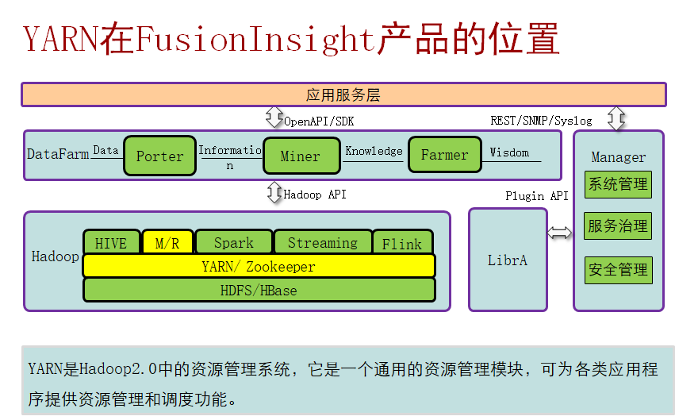

Spark原理与架构
- Spark Core
- Spark SQL和Dataset
- Spark Structured Streaming
- Spark Streaming
Spark在FusionInsight中的集成情况
Saprk 特点（四个特点）：
轻，快，灵，巧

数独案例：
首先spark的RDD从哪里来？ 从HDFS里面来，所以我们调用textfile命令从HDFS中读出了第一个RDD，就把这些数据全部读出来，
第二步进行flatmap，把这些数据按照分隔符 在这里也就是空格，进行分割 分割成一个个单词
接下来进行map操作生成第三个RDD，每个单词出现一次就给他记一次数，
然后再进行reduceByKey，对这些数进行一个统计合并，生成了第四个RDD，
最后把生成的这个RDD存回到HDFS，执行saveAsTextFile这个命令
save之前都是Transformation算子 从save开始才是action算子
Spark SQL
结构化数据处理的模块，无缝使用SQL 或DatFrame
Spark SQL将SQL语言解析成RDD，再由Spark Core执行
DataFrame是一个分布式集合，其中数据被组织为命名的列。
Dataset
- Dataset是一个新的数据类型。Dataset与RDD高度类似，性能比较好。
- Dataset不需要反序列化就可执行大部分操作。本质上，数据集表示一个逻辑计划，该计划描述了产生数据所需的计算。
- Catalyst优化器。
- Dataset 与 RDD 相似, 然而, 并不是使用 Java 序列化或者 Kryo 编码器来序列化用于处理或者通过网络进行传输的对象。 虽然编码器和标准的序列化都负责将一个对象序列化成字节，编码器是动态生成的代码，并且使用了一种允许 Spark 去执行许多像 filtering, sorting 以及 hashing 这样的操作, 不需要将字节反序列化成对象的格式。
- jvm中存储的java对象可以是序列化的，也可以是反序列化的。序列化的对象是将对象格式化成二进制流，可以节省内存。反序列化则与序列化相对，是没有进行二进制格式化，正常存储在jvm中的一般对象。RDD可以将序列化的二进制流存储在jvm中，也可以是反序列化的对象存储在JVM中。至于现实使用中是使用哪种方式，则需要视情况而定。例如如果是需要最终存储到磁盘的，就必须用序列化的对象。如果是中间计算的结果，后期还会继续使用这个结果，一般都是用反序列化的对象。
DataFrame
简介： 指定列名称的Dataset。DataFrame是Dataset[Row]的特例
DataFrame是一个由多个列组成的结构化的分布式数据集合，等同于关系数据库中的一张表，或者是R/Python中的data frame。DataFrame是Spark SQL中的最基本的概念，可以通过多种方式创建，例如结构化的数据集、Hive表、外部数据库或者是RDD

- DataFrame提供了详细的结构信息，使得Spark SQL可以清楚地知道该数据集中包含哪些列，每列的名称和类型各是什么。DataFrame多了数据的结构信息，即schema（纲要）。这里主要对比Dataset和DataFrame，因为Dataset和DataFrame拥有完全相同的成员函数，区别只是每一行的数据类型不同DataFrame也可以叫Dataset[Row],每一行的类型是Row，不解析，每一行究竟有哪些字段，各个字段又是什么类型都无从得知，只能用getAS方法或者共性中的模式匹配拿出特定字段。而Dataset中，每一行是什么类型是不一定的，在自定义了case class之后可以很自由的获得每一行的信息，结合上图总结出，DataFrame列信息明确，行信息不明确。
- 由于DataFrame带有schema信息，因此，查询优化器可以进行有针对性的优化，以提高查询效率。
- DataFrame在序列化与反序列化时，只需对数据进行序列化，不需要对数据结构进行序列化。
- Row：代表关系型操作符的输出行；类似Mysql的行。
RDD，DataFrame 与Dataset的优缺点
RDD（RDD是底层的数据结构）：
- 优点：类型安全，面向对象。
- 缺点：序列化和反序列化的性能开销大；GC的性能开销，频繁的创建和销毁对象, 势必会增加GC（RDD无论是集群间的通信, 还是IO操作都需要对对象的结构和数据进行序列化和反序列化）。
DataFrame：
- 优点：
- 自带scheme信息，降低序列化反序列化开销。
- off-heap : 意味着JVM堆以外的内存, 这些内存直接受操作系统管理（而不是JVM）。Spark能够以二进制的形式序列化数据(不包括结构)到off-heap中, 当要操作数据时, 就直接操作off-heap内存. 由于Spark理解schema, 所以知道该如何操作。
- 缺点：不是面向对象的；编译期不安全。
Dataset：
- 快：大多数场景下，性能优于RDD；Encoders优于Kryo或者Java序列化；避免不必要的格式转化（快，主要是降低了序列化和反序列化开销，及大量的GC开销）。
- 类型安全：类似于RDD，函数尽可能编译时安全。
- 和DataFrame,RDD互相转化。
Dataset具有RDD和DataFrame的优点，又避免它们的缺点
Spark SQL vs Hive（Spark SQL和Hive的语法除了桶表操作外，基本一样）
- 区别：
- Spark SQL的执行引擎为Spark core，Hive默认执行引擎为MapReduce。
- Spark SQL的执行速度是Hive的10-100倍。
- Spark SQL不支持buckets，Hive支持。
- 联系：
- Spark SQL依赖Hive的元数据。
- Spark SQL兼容绝大部分Hive的语法和函数。
- Spark SQL可以使用Hive的自定义函数。
Spark与hadoop:
- Hadoop有两个核心模块，分布式存储模块HDFS和分布式计算模块Mapreduce
- spark本身并没有提供分布式文件系统，因此spark的分析大多依赖于Hadoop的分布式文件系统HDFS
- Hadoop的Mapreduce与spark都可以进行数据计算，而相比于Mapreduce，spark的速度更快并且提供的功能更加丰富


Spark采用Master和worker的模式，如图3所示。用户在Spark客户端提交应用程序，调度器将Job分解为多个Task发送到各个Worker中执行，各个Worker将计算的结果上报给Driver（即Master），Driver聚合结果返回给客户端。

图3 Spark的Master和Worker
在此结构中，有几个说明点：
- 应用之间是独立的。
- 每个应用有自己的executor进程，Executor启动多个线程，并行地执行任务。无论是在调度方面，或者是executor方面。各个Driver独立调度自己的任务；不同的应用任务运行在不同的JVM上，即不同的Executor。
- 不同Spark应用之间是不共享数据的，除非把数据存储在外部的存储系统上（比如HDFS）。
- 因为Driver程序在集群上调度任务，所以Driver程序最好和worker节点比较近，比如在一个相同的局部网络内。
Spark on yarn有两种部署模式。
- yarn-cluster模式下，Spark的Driver会运行在YARN集群内的ApplicationMaster进程中，ApplicationMaster已经启动之后，提交任务的客户端退出也不会影响任务的运行。
- yarn-client模式下，Driver启动在客户端进程内，ApplicationMaster进程只用来向YARN集群申请资源
Spark Sreaming
是Spark上的实时计算框架，扩展大规模流式处理能力
在一个Spark Streaming应用开始时（也就是driver开始时），相关的StreamingContext（所有流功能的基础）使用SparkContext启动Receiver成为长驻运行任务。这些Receiver接收并保存流数据到Spark内存中以供处理。用户传送数据的生命周期如图4所示：

图4 数据传输生命周期
1.接收数据（蓝色箭头）
Receiver将数据流分成一系列小块，存储到Executor内存中。另外，在启用WAL以后，数据同时还写入到容错文件系统的预写日志中。
2.通知Driver（绿色箭头）
接收块中的元数据（metadata）被发送到Driver的StreamingContext。这个元数据包括：
定位其在executor内存中数据位置的块reference id。
块数据在日志中的偏移信息（如果启用了WAL，即预写日志功能）。
3.处理数据（红色箭头）
对每个批次的数据，StreamingContext使用Block信息产生RDD及其Job。StreamingContext通过运行任务处理Executor内存中的Block来执行Job。
4.周期性地设置检查点（橙色箭头）
5.为了容错的需要，StreamingContext会周期性地设置检查点，并保存到外部文件系统中。
容错性
恢复流程
1.恢复计算（橙色箭头）
使用checkpoint信息重启Driver，重新构造SparkContext并重启Receiver。
2.恢复元数据块（绿色箭头）
为了保证能够继续下去所必备的全部元数据块都被恢复。
3.未完成作业的重新形成（红色箭头）
由于失败而没有处理完成的批处理，将使用恢复的元数据再次产生RDD和对应的作业。
4.读取保存在日志中的块数据（蓝色箭头）
在这些作业执行时，块数据直接从预写日志中读出。这将恢复在日志中可靠地保存的所有必要数据。
5.重发尚未确认的数据（紫色箭头）
失败时没有保存到日志中的缓存数据将由数据源再次发送。因为Receiver尚未对其确认。
因此通过预写日志和可靠的Receiver，Spark Streaming就可以保证没有输入数据会由于Driver的失败 而丢失。
RDD
即弹性分布数据集（Resilient Distributed Dataset），是Spark的核心概念。指的是一个只读的，可分区的分布式数据集，这个数据集的全部或部分可以缓存在内存中，在多次计算间重用。
RDD的生成：
- 从HDFS输入创建，或从与Hadoop兼容的其他存储系统中输入创建。
- 从父RDD转换得到新RDD。
- 从数据集合转换而来，通过编码实现。
RDD的存储：
- 用户可以选择不同的存储级别缓存RDD以便重用（RDD有11种存储级别）。
- 当前RDD默认是存储于内存，但当内存不足时，RDD会溢出到磁盘中。
Dependency（RDD的依赖）
RDD的依赖分别为：窄依赖和宽依赖。